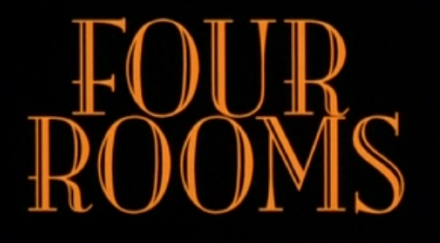
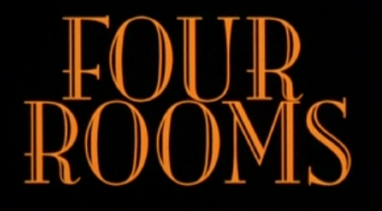

- UNA PELICULA DE QUENTIN TARANTINO, ROBERT RODRIGUEZ, ALLISON ANDERS Y ALEXANDRE ROCKWELL -

Suite Nupcial · "THE MISSING INGREDIENT"
(EL INGREDIENTE PERDIDO)
Allison Anders (DIRECTORA DE RODAJE)
Allison Anders (16 de noviembre de 1954) es una directora de cine independiente estadounidense cuyas películas incluyen Gas Food Lodging, Mi Vida Loca y Grace of My Heart . Anders ha colaborado con Kurt Voss, graduado de la Escuela de Teatro, Cine y Televisión de UCLA, y también ha trabajado como directora de televisión. Las películas de Anders se han exhibido en el Festival Internacional de Cine de Cannes y en el Festival de Cine de Sundance. Ha sido galardonada con una beca MacArthur y con un premio Peabody .
Valeria Golino como Athena
Valeria Golino (Nápoles, Italia, 22 de octubre de 1965) es una actriz de cine y de televisión y directora de cine greco-italiana, principalmente conocida por su participación en la película Rain Man (1988). Ha obtenido diversos premios durante su carrera, como el David di Donatello, el Nastro d'Argento y la Copa Volpi. Debutó como directora de cine con Miele, que ganó un Commendation en el Festival de Cine de Cannes de 2013.
Madonna como Elspeth
Madonna Louise Ciccone (Bay City, Míchigan; 16 de agosto de 1958), co>nocida simplemente como Madonna, es una cantante, bailarina, compositora, actriz, empresaria e icono estadounidense.

Alicia Witt como Kiva
Alicia Roanne Witt (Worcester, Massachusetts; 21 de agosto de 1975) es una actriz, cantante, modelo y músico estadounidense. Es conocida por interpretar a Nola Falacci en Law & Order: Criminal Intent.

Amanda de Cadenet como Diana (La Diosa)
Amanda de Cadenet es una fotógrafa, autora y personalidad de los medios de comunicación inglesa con sede en Los Ángeles. Comenzó su carrera en el entretenimiento en la década de 1990, primero como presentadora de las series británicas The Word y The Big Breakfast antes de mudarse a Los Ángeles para seguir brevemente una carrera como actriz. Una figura de los tabloides en ese momento, hizo la transición a una carrera más privada como fotógrafa en la década de 2000. Más recientemente, ha presentado una serie de entrevistas homónimas en Lifetime Channel.
Sammi Davis como Jezebel
Sammi Davis (n. 21 de junio de 1964) es una actriz británica. Obtuvo buenas críticas por su actuación en The Rainbow (1989), de Ken Russell. Tuvo papeles importantes en A prayer for the dying (1987, de Mike Hodges) y Hope and Glory (1987, de John Boorman) y también un papel protagónico en la serie de televisión estadounidense Homefront(1991-1993), ganadora de un premio Emmy. Davis se casó con el director Kurt Voss, y tienen una hija. Tuvo que cambiar su nombre a Sammi Davis-Voss. Tras pasar un par de años fuera de la industria cinematográfica para criar a su familia, volvió al cine con un cameo en la serie estadounidense de televisión Lost, haciendo el papel de madre del personaje del actor Dominic Monaghan.
Lili Taylor como Raven
Lili Anne Taylor (Glencoe, Illinois; 20 de febrero de 1967) es una actriz estadounidense que ha trabajado principalmente en películas independientes. Ha ganado un premio del Sindicato de Actores por su actuación en la serie Six Feet Under, y ha sido nominada en tres ocasiones al premio Primetime Emmy.
Ione Skye como Eva
- Ione Skye Leitch (Hertfordshire, Inglaterra, 4 de septiembre de 1970) es una actriz estadounidense nacida en el Reino Unido.
- Trabajó en 1987 en la miniserie Napoleón y Josefina: Una historia de amor y, más adelante, se convirtió en un ídolo adolescente por su papel con John Cusack Say Anything (1989). En el 2006, la revista VH1 la puso en el puesto 84 de "100 Greatest Teen Stars".